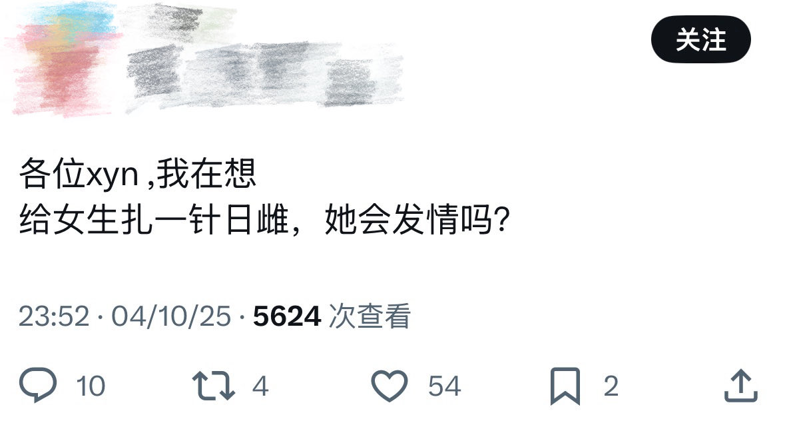

🍀🍥竹蜻蜓🍥🍀
@zqtlovekris99
@maigo_wakatake MtF笑传之我雌爆了天天发情特别想被草

咪仑唑达
@maigo_wakatake
不想给这人流量但你在把激素当神奇魔药之前能不能找本教材读读了解下类固醇激素的作用机理和代谢路径以及你想要的究竟是雌激素还是母牛针
以及看图二的话还是找个叉歪恩贴贴群给这位收了吧，大家抱在一起喵来喵去也未必不是有利于精神健康的事情 https://t.co/cNeWg19Zp7